| Duvel | Delirium Tremens | Chimay Yellow - Trappiste |
|
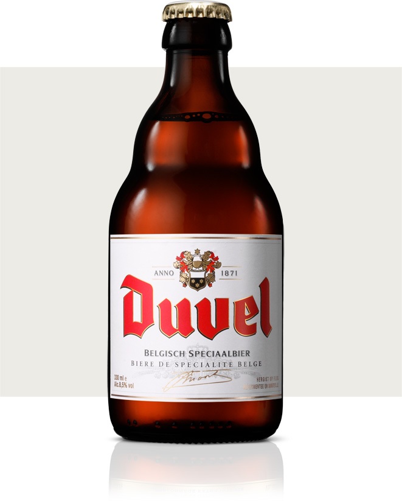
$ 8.00 |
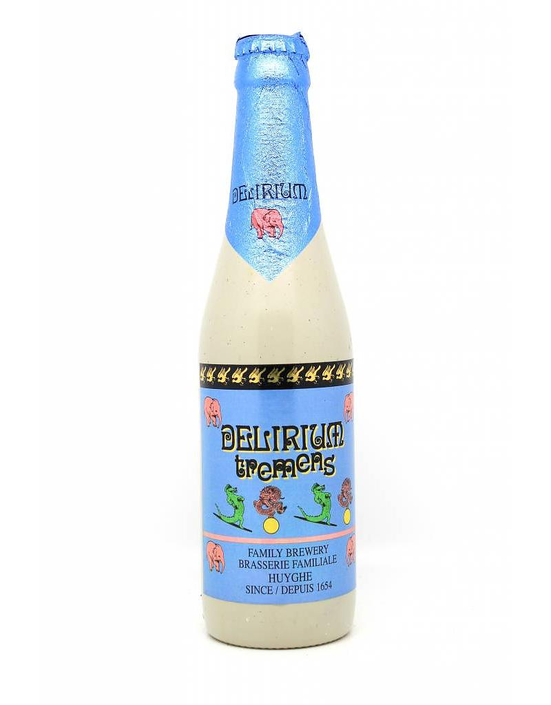
$ 9.00 |
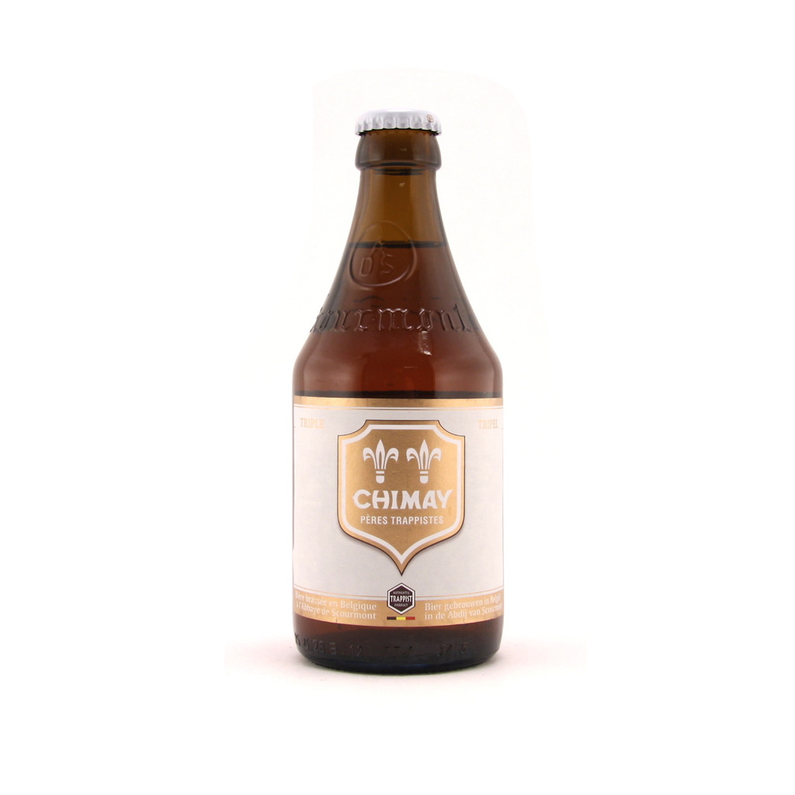
$ 10.00 |
|
A Duvel is still seen as the reference among strong golden ales. Its bouquet is lively and tickles the nose with an element of citrus which even tends towards grapefruit thanks to the use of only the highest-quality hop varieties. This is also reflected in the flavour, which is beautifully balanced with a hint of spiciness. Thanks to its high CO2 content, this beer has a wonderful roundness in the mouth. A Duvel is both the perfect thirst quencher and the ideal aperitif.
Style: Special beer, re-fermented in the bottle Taste: Slightly fruity, dry aroma, well-hopped beer and with a slightly bitter aftertaste Hops: Saaz-Saaz & Styrian Golding Appearance: Blond Shelf life: 24 months Serving Tips: Always serve in the tulip shaped Duvel glass at 5°C |
In 1906, Laurent Huyghe bought the brewery where he had been working for four years. Though the brewery itself dates back to the 17th century, Delirium Tremens —its flagship beer with the pink elephant on the label— was first brewed on December 26, 1989. This Belgian Strong Golden Ale has potent aromas of alcohol and spice thanks to the complex blend of yeasts used to brew the beer. |
Chimay Yellow : Known by a couple of different names, this Belgian Tripel was created in 1966 (known as White Cap) and is brewed to a strength of 8% abv. This, I believe is now distributed in a white label bottle as well, which I recently purchased thinking it was a different beer but isn’t.
Aroma and Appearance: It pours a cloudy gold colour with some centered bubbles and one finger of foam. The aroma is clove, sweet pears, banana, herbs and hints of caramel. Flavour: This is a fairly sweet beer, with fruity pears up front and a super light effervescent body that brings out hints of caramel malt and spice in the middle. On the finish, there are notes of clove, more caramel and spicy herbs that get a little astringent as it goes down. Overall Impression: Pretty nice beer, very enjoyable and nicely mellowed over the two years. Rating: I give it an Excellent rating of 8/10, it is a high quality authentic Tripel. |
| Beer Colorado - Indica | Antarctica Original | Tupiniquim Extra Fancy |
|
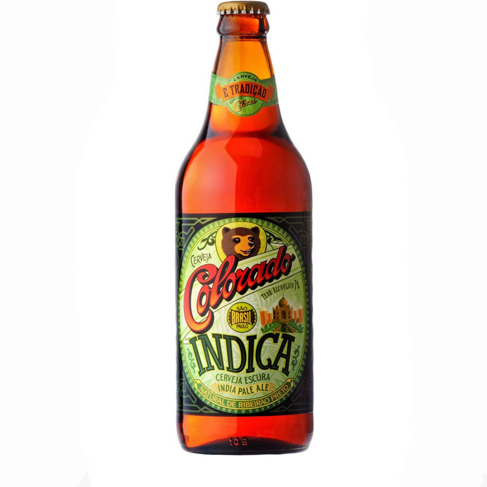
$ 12.00 |
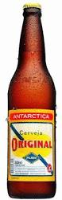
$ 13.00 |
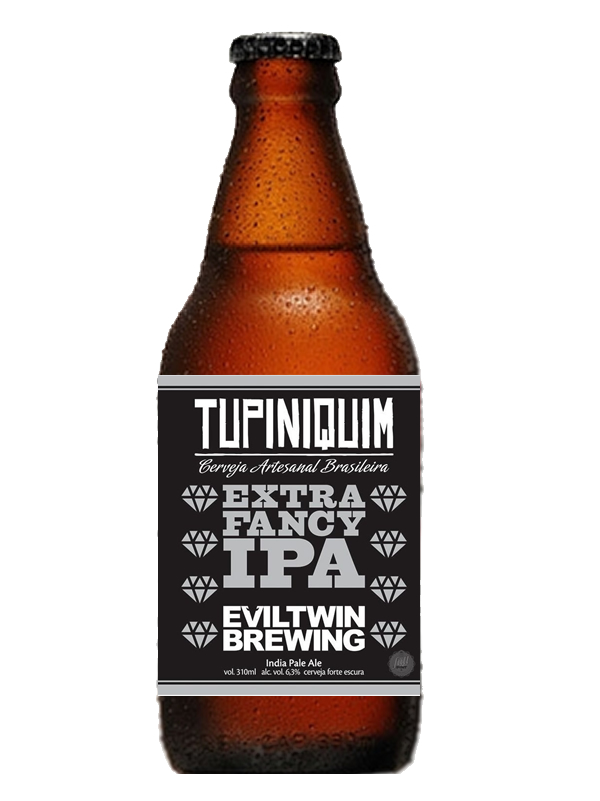
$ 14.00 |
|
Traditional India Pale Ale, hoppy flavor, high alcohol content, inspired by English beers. Made from English hops, toasted malt and rapadura (traditional Brazilian candy) Average brewing period of 28 days. 7% Alcohol content.
Style: India Pale Ale % alcoholic: 7,00% IBU: 45.00 Hops: Galena e Cascade º of Serv.: 8-12ºC Color: Ambar |
Companhia Antarctica Paulista was originally a Brazilian beer brewing company producing the Antarctica beer, that later started to produce sodas such as the Guaraná Antarctica. For several years its main rival on the beer market was Brahma. In 1999 the companies merged to form Ambev.
Classic Beer Antarctica Original 600ml is recognized for preserving its essence, tradition and quality since 1931. A Standard American Lager soft, light bitterness and hop aroma, and unique freshness - guaranteed by its high carbonation. Traditional 600ml version is ideal to share with friends without heat. Complement socializing, harmonizing the Original flavor with snacks, cheese breaded, fried squid, oysters or salamis and pizzas. |
Most people like drinking a regular IPA and would never consider expanding their beer horizont any further. Some people like to challenge their taste buds and drink fancy IPA - they appreciate the generously hoppiness along with well balanced body and complex flavors. This beer is an Extra Fancy IPA.
Expect more... Style: India Pale Ale Brewed: Cerveja Tupiniquim, Brazil ABV: 6.3 |
| St-Ambroise Apricot | Dieu du Ciel - Peche Mortel | Dieu du Ciel - Blanche Neige |
|
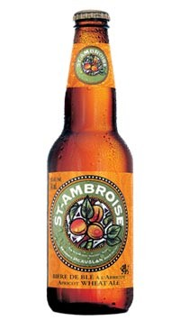
$ 6.00 |
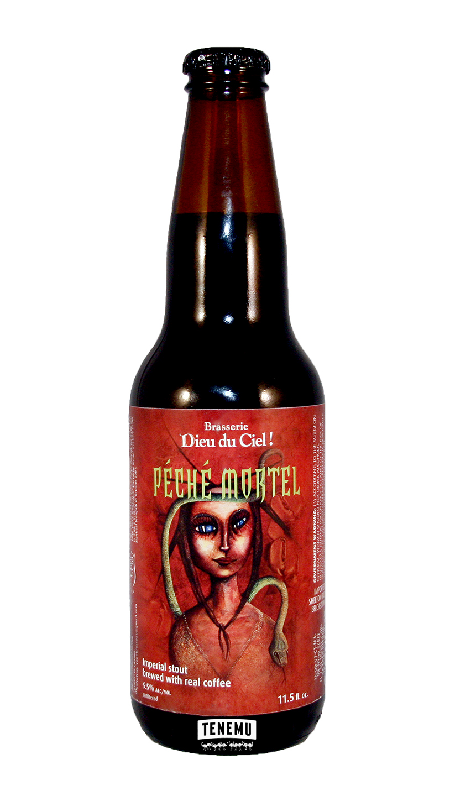
$ 7.00 |
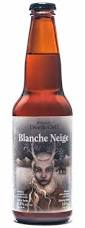
$ 8.00 |
|
Natural apricot flavour is married to barley and wheat malts to give St-Ambroise Apricot Wheat Ale its uniquely delicious, subtly sweet taste. A natural, delightfully refreshing choice for adventurous palates that appreciate a light ale with a playful twist.
Type: Apricot Wheat Ale Houblons: Willamette, Golding IBU : 15 Densité originale (Plato) 15.5 Servir 5 °C — 12 °C Alc/Vol 5% |
Alcohol by volume (ABV): 9.50%
Péché Mortel (French for "Mortal Sin") is an intensely black and dense beer with very pronounced roasted flavours. Fair trade coffee is infused during the brewing process, intensifying the bitterness of the beer and giving it a powerful coffee taste. Péché mortel is brewed to be savored; we invite you to drink it in moderation. This stout style, high in alcohol and bitterness in order to favour preservation, was historically brewed to support the long and arduous voyage necessary to export the beer from England to Russia. The word Imperial comes from the fact that the beer was specially brewed for the Russian tsar’s court. |
Originally introduced at the DDC! brewpub as a winter seasonal in January 2001, Blanche Neige – which translates to “Snow White” – is a Belgian-style wheat beer flavoured with cinnamon and clove, described as follows:
Blanche Neige isn’t your typical wheat beer. Firstly, the level of alcohol (9.5%) is surprising and is perceived rapidly both in the bouquet and in the mouth. The spices come through immediately, giving very little room for the usual wheat beer aromas (coriander and curaçao). Cinnamon and clove dominate and the flavours are generously well-rounded thanks no doubt to residual sugars. It is therefore a very sweet beer that is best appreciated slowly. |
| Fullers London Pride | Badger Golden Glory | Robison Old Tom |
|
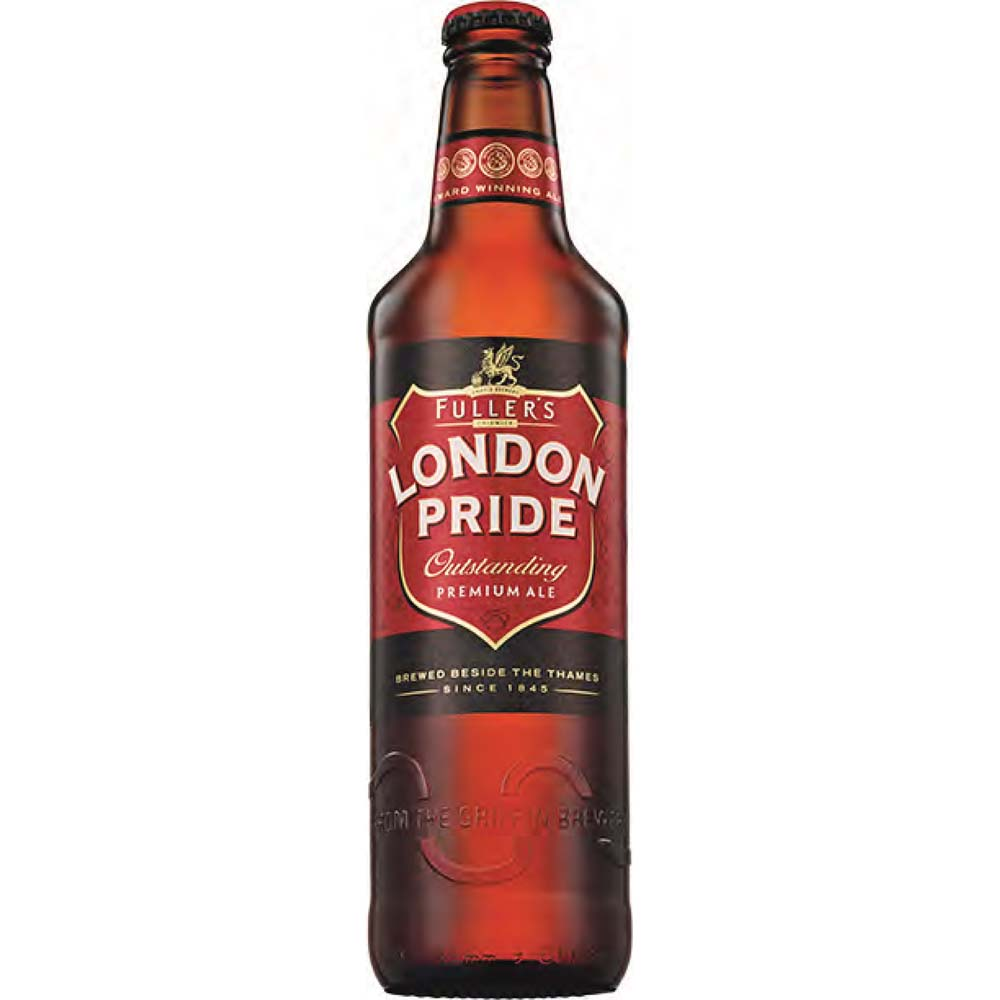
$ 8.00 |
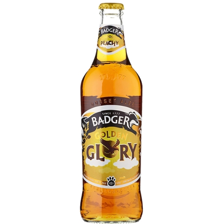
$ 9.00 |
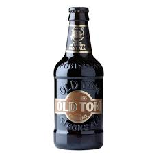
$ 10.00 |
| London Pride is a smooth and astonishingly complex beer, which has a distinctive malty base complemented by a rich balance of well developed hop flavours from the Target, Challenger and Northdown varieties in the brew. |
This award-winning classic is a deliciously balanced ale with peach and melon flavours. It makes an ideal complement to sticky bbq ribs or an indulgent vanilla cheesecake
Alcohol by volume (ABV): 5.00% Availability: Year-round |
THE ORIGINAL CRAFT BEER
8.5%ABV Old Tom is almost as old as the brewery itself. Dubbed ‘The original craft beer’ this dangerously drinkable legend was born in 1899, when Tom, the old brewery cat, was sketched into immortality by the head brewer. This superior dark ale is recognised, nationally and internationally, as one of the premier strong ales. It has won some of the industry’s most prestigious awards, including World’s Best Ale and Champion Beer of Britain. Rich and warming, Old Tom has a distinctive deep port wine finish, with bitter hops balanced by the heady aromas of dark fruit. Old Tom is available in selective Morrisons, Booths, Waitrose, Bookers and Parfetts across the North West, as well as Asda, Tesco, Sainsbury's and Nisa Today across the UK. Contains: Malted BARLEY and WHEAT. |